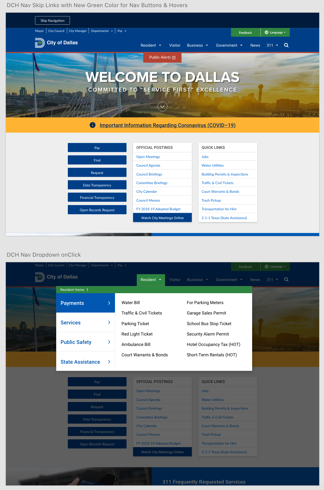

City of Dallas
Responsive Design
In this project for Dallas City Hall, we took the current website and converted it into a responsive grid for a better user experience on tablet and mobile devices. We used the Bootstrap framework. My responsibilities on this project which was a team effort included:
- Design work of the responsive global and sub menus with web accessibility standard guidance
- Updating the hero image
- Assisting with the front end development of the homepage
Role: UX/UI Designer & Front End Assist
Programs: Adobe XD & Sharepoint Designer
Year: 2017

Back